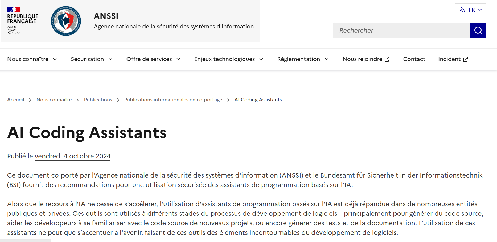

Sujet de veille
Cette partie est réservée à la présentation du sujet choisi, des sources consultées, des informations retenues et de l’évolution du sujet dans le temps.
L’intégration de l’intelligence artificielle dans le développement logiciel et les nouveaux enjeux de cybersécurité
L’intelligence artificielle prend une place de plus en plus importante dans le développement logiciel. Les assistants de programmation basés sur l’IA permettent notamment aux développeurs de générer du code, comprendre un projet existant, créer des tests et produire de la documentation. Cette évolution permet de gagner du temps et d’accompagner les développeurs dans différentes étapes de la conception d’une application.
Cependant, l’utilisation de l’IA dans le développement logiciel apporte également de nouveaux enjeux de cybersécurité. Le code généré par une IA peut contenir des erreurs ou des vulnérabilités et les développeurs doivent donc vérifier et tester les résultats avant de les intégrer dans une application. Il est également important de ne pas transmettre d’informations sensibles, comme des mots de passe, des clés API ou des données confidentielles, à des outils d’IA. Selon l’ANSSI et le BSI, les assistants de programmation basés sur l’IA présentent à la fois des opportunités et des risques de sécurité. Les deux organismes recommandent notamment une utilisation responsable de ces outils et une vérification du code généré par l’IA. En 2026, l’ANSSI continue également de suivre l’évolution des menaces liées à l’intelligence artificielle. L’agence souligne que l’IA générative peut être utilisée à différentes étapes d’une cyberattaque, mais qu’elle peut également devenir elle-même une cible. Sources : ANSSI & BSI — AI Coding Assistants
L’intelligence artificielle transforme progressivement le développement logiciel en facilitant la génération de code, les tests et la documentation. Cependant, son utilisation nécessite de rester vigilant face aux risques de cybersécurité, notamment les fuites de données, les erreurs dans le code généré et les nouvelles attaques visant les systèmes d’IA. Les développeurs doivent donc utiliser ces outils de manière responsable, vérifier les résultats produits et appliquer les bonnes pratiques de sécurité. L’IA représente ainsi une réelle opportunité pour le développement logiciel, à condition de l’intégrer dans une démarche de sécurité et de contrôle humain.
SOURCE PRINCIPALE : ANSSI — Synthèse de la menace sur l’IA générative face aux attaques informatiques, 2026
Sources consultées
Pour réaliser cette veille technologique, j’ai consulté différentes sources afin de suivre l’évolution du sujet, les nouvelles technologies et les bonnes pratiques du domaine.

eu-LISA — Generative AI in Software Development
Cette source m’a permis de comprendre l’évolution des assistants de programmation basés sur l’IA et leurs effets sur le développement logiciel, notamment sur la productivité, la qualité du code et la sécurité.
Consulter la source →
Commission européenne — IA et cybersécurité
Cette source m’a permis de comprendre les nouvelles opportunités offertes par l’IA en cybersécurité, mais également les risques liés à son utilisation pour rechercher des vulnérabilités et automatiser certaines attaques.
Consulter la source →